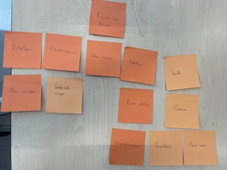
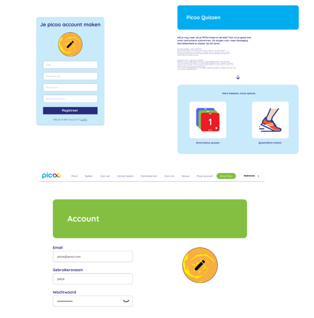
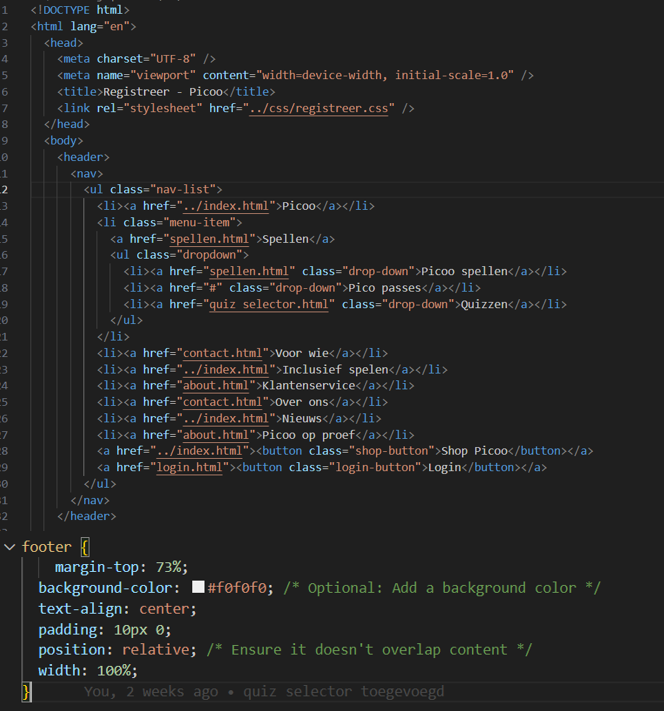
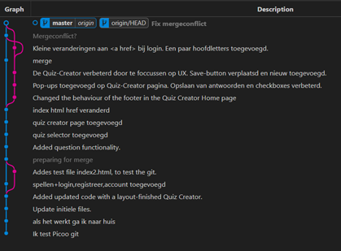

Development
Development voor picoo
Voor het Dev-project voor picoo hebben Michal en ik het design dat we eerder in Figma hadden gemaakt tijdens het UX project omgezet naar een werkende website. De belangrijkste features die we moesten realiseren voor de Quiz Creator waren het aanmaken, verwijderen en aanpassen van quizvragen. Dat was echt de kernfunctionaliteit waar we omheen moesten bouwen.
Bekijk de Quiz CreatorGithub
Flow en structuur bepalen
Voordat we begonnen met bouwen, hebben we eerst card sorting gedaan om te kijken wat de beste flow zou zijn voor de gebruikers. We hebben verschillende opties bekeken en uiteindelijk gekozen voor een aanpak waarbij je op meerdere manieren bij de Quiz Creator terecht kan komen.
De eerste manier is via de bestaande Games-pagina. Als je daar naar de Quiztafette gaat, zie je een knop die je doorverwijst naar de Quiz Creator.
De tweede manier is via een nieuwe toevoeging in de slideout. Waar eerst "SmartSleeve Quizzen" stond, hebben wij dat aangepast naar "Quizzen". Als je daarop klikt, kom je op een nieuwe pagina met een korte uitleg over wat SmartSleeve is en wat de Quiz Creator precies doet. Onderaan de pagina staan twee iconen; via die iconen kom je op het Quiz Creator home screen terecht. Vanuit daar kun je ofwel direct naar de Quiz Creator gaan om een nieuwe quiz te maken, of eerder gemaakte quizzen bekijken.

Taakverdeling
Wat betreft de verdeling van het werk: Michal heeft de homepage en de daadwerkelijke Quiz Creator gebouwd. Ik heb me vooral gericht op de login/accountpagina, de uitbreiding van de Games-pagina, de quiz selector en de Quiz Creator homepagina. Om het mezelf makkelijker te maken bij het coderen, heb ik voor mijn onderdelen nog extra Figma-designs gemaakt. Zo kon ik beter visualiseren hoe alles eruit moest komen te zien.
Technische uitdagingen
Tijdens het coderen liep ik tegen een paar dingen aan. Eén daarvan waren de href-links. We hadden een aparte html/-map waarin al onze HTML-bestanden stonden. In het begin werkte mijn links niet goed, omdat ik niet goed doorhad hoe de paden precies werkten. Eerst had ik overal html/ voor gezet, wat vanaf de index.html goed werkte. Maar als je dan op een andere pagina zat en vandaaruit wilde navigeren, dan ging hij naar iets van html/html/..., en dat klopte natuurlijk niet. Uiteindelijk kwam ik erachter dat je met ../ eerst teruggaat uit de map en dan weer verder zoekt. Toen dat eenmaal duidelijk was, heb ik alles aangepast en werkte de navigatie goed.
Ook had ik wat frustratie met de footer. Die wilde maar niet netjes onderaan de pagina blijven. Soms zat 'ie zelfs midden op de pagina, over andere elementen heen. Uiteindelijk heb ik dat opgelost met een combinatie van position: relative en margin-top. Niet de meest elegante oplossing misschien, maar het werkte wél.

Development
En dan Git… dat was echt een avontuur op zich. We hadden vaak het probleem dat we niet in dezelfde branch zaten. Dat is op zich nog te overzien, maar als je dan niet meer kan mergen, dan zit je echt met je handen in het haar. Dat gebeurde dus ook bij ons.
We zijn toen naar Maikel gegaan, die ons liet zien hoe we branches konden samenvoegen. Dat ging even goed, tot het op een gegeven moment weer misging. We snappen nog steeds niet hoe, maar toen Michal een git push deed, kwam er ineens een derde, groene branch bij. Zelfs Maikel snapte niet helemaal hoe dat gebeurd was – hij was serieus verbaasd. Gelukkig heeft hij ons opnieuw geholpen en uiteindelijk kregen we het allemaal weer goed werkend. Dus ja, het was af en toe echt een puinhoop, maar we hebben het wel opgelost.

Eindresultaat
Ik vond dat we het best goed gedaan hebben in dit project. Wat me vooral verraste was hoe positief de mensen van Picoo reageerden op onze presentatie. Ze vonden het leuk wat we gemaakt hadden en dat gaf echt een goed gevoel. Je werkt toch een paar weken ergens naartoe, en dan is het fijn om te merken dat je werk gewaardeerd wordt.